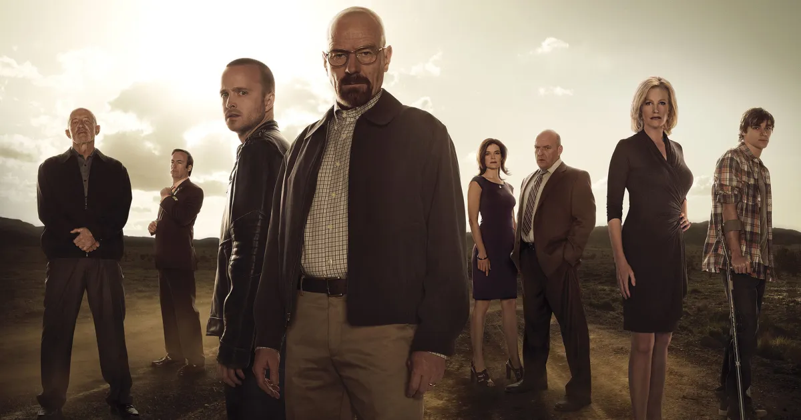

About
Breaking Bad was created by Vince Gilligan, who had spent several years writing the Fox series The X-Files. Gilligan wanted to create a series in which the protagonist became the antagonist.
Breaking Bad was created by Vince Gilligan, who had spent several years writing the Fox series The X-Files. Gilligan wanted to create a series in which the protagonist became the antagonist.